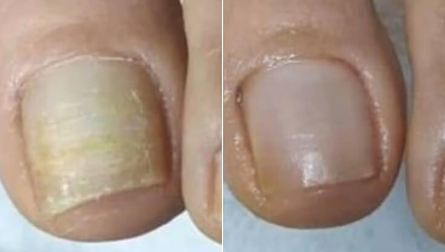
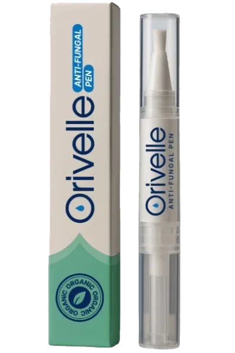

Mi médica dijo que tardaría hasta un año en tratar los hongos persistentes de mis uñas. Lo solucioné en 4 semanas con ESTO
Probé 9 «remedios» distintos durante 5 años y los hongos SIEMPRE volvían. Llevo más de 18 meses sin ellos, ¡y la solución era increíblemente sencilla! Te cuento exactamente lo que hice.

Me llamo Carla, tengo 37 años y durante 5 años sufrí hongos en las uñas de los pies que me daban muchísima vergüenza y no conseguía eliminar.
Creo que me contagié durante una pedicura en un centro de estética. Lo dejé pasar un par de años pensando que desaparecería solo…
Pero no fue así.
Al contrario: pasó a otro dedo, luego a otro, hasta que ya no pude seguir fingiendo que no ocurría nada. Me horroricé.
Me sentía fatal al mirarme los pies – hasta me hacía sentir sucia.
Toda mi vida empezó a girar en torno a esconder mis pies. En la playa los enterraba en la arena para que nadie los viera. En casa llevaba calcetines todo el año…
Me inventaba excusas para no ir a hacerme la pedicura con mis amigas. Y elegía la ropa según los zapatos que pudieran taparme los dedos – nunca las bonitas sandalias abiertas que de verdad quería ponerme.
Recuperar mis uñas se convirtió en una obsesión, así que pasé los siguientes 5 años probándolo TODO.
Y si alguna vez has buscado en Google «cómo eliminar los hongos de las uñas de los pies», sabes de qué hablo…
Hay cientos de «soluciones»: remedios caseros, pastillas y rutinas matutinas de 20 pasos que supuestamente debes seguir antes de calzarte.
¡Solo intentar seguirlas ya parece un trabajo a jornada completa!
Y lo peor de los hongos en las uñas es que entras en un círculo desesperante. Oyes hablar de una «nueva solución increíble». La pruebas. Parece funcionar unas semanas. Y después los hongos vuelven.
Una. Y otra. Vez.
Es desmoralizador. Al cabo de un tiempo empiezas a creer que tendrás que convivir con ello para siempre.
Pero la buena noticia es que… no tiene por qué ser así.
SÍ hubo algo que finalmente me funcionó – mis uñas mejoraron en semanas, no en años, y solo necesitaba unos segundos cada mañana, sin salir de casa.
Voy a contarte todo lo que probé, qué falló y por qué, para que te ahorres 5 años de consejos equivocados y conozcas directamente lo único que me ayudó a acabar con los hongos de las uñas de forma rápida – y duradera.

Las soluciones temporales que permiten que vuelvan los hongos (no pierdas el tiempo con ellas)
Fui a mi médica de cabecera y me dijo que tardaría aproximadamente un año en eliminar los hongos.
Lo primero que me recetó fue terbinafina – y, de hecho, funcionó. Los hongos parecían desaparecer, mis uñas empezaron a tener un aspecto casi normal y me ilusioné pensando que todo había terminado.
¡Qué equivocada estaba!
Menos de 2 semanas después de terminar las pastillas, las rayas amarillas reaparecieron en la uña del dedo gordo. Me senté al borde de la bañera y me puse a llorar.
Fue entonces cuando empecé a probar de todo…
Aceite de árbol de té – En Reddit, en los foros y en Google todo el mundo lo recomendaba. Lo diluí con aceite de coco, como decían, y me lo apliqué dos veces al día con un bastoncillo durante 4 meses sin fallar. Mis uñas parecían mejorar un poco. Pero me fui de puente, dejé de usarlo 3 días y, al volver, los hongos habían regresado con más fuerza.
Vicks VapoRub. Me ablandó las uñas y creí sinceramente que estaba funcionando. Hasta que una mañana vi que los hongos se habían extendido a un tercer dedo.
Baños de vinagre de manzana. 20 minutos cada noche durante 6 semanas. Mi baño olía a vinagrería. Al principio las uñas mejoraron un poco, después se estancaron y finalmente empeoraron.
Cremas antifúngicas de farmacia – Canesten, Daktarin, Lamisil en crema – las usé religiosamente todas las noches. El envase prometía «resultados en 4 semanas». En mi caso, el resultado fue absolutamente ninguno.
Baños de Listerine – Otro «milagro» de internet. Lo probé durante 2 meses. Solo conseguí acabar con los pies azulados y un baño que olía a consulta de dentista.
Pasta de bicarbonato. A las tres semanas tenía la piel irritada, ninguna mejoría y bicarbonato por todas las sábanas al despertarme.
Tratamiento con láser en una clínica privada de Madrid. 280 € por sesión. Gasté más de 1.100 €. Al terminar, los hongos habían disminuido aproximadamente un 60 %. Seis meses después estaba igual que al principio.
Laca de uñas con receta: hay que aplicarla cada día durante un máximo de 48 semanas. Aguanté 8 meses. Durante unas 6 semanas pareció que los hongos remitían. Luego volvieron.
Cada vez que algo fallaba, me decían lo mismo – «dale más tiempo, sé más constante, tienes que seguir.»
Pero no podía imaginarme pasando el resto de mi vida tomando pastillas que me sentaban mal o aplicándome productos en las uñas todos los días.
Tenía que existir algo mejor. Algo que funcionara de verdad, rápido y que evitara que los hongos volvieran.
Y lo encontré.
Mientras buscaba una solución definitiva, me recomendaron a una especialista en cuidado integral de la piel de Madrid – la doctora Cristina Fernández – que había tratado con éxito numerosos casos persistentes de hongos en la piel y las uñas.
Dos semanas después estaba en su consulta.
Empezó explicándome algo que nunca había oído: es difícil eliminar los hongos porque no se encuentran sobre la uña – sino entre la uña y el lecho ungueal.
Eso significa que todos los tratamientos tópicos que había probado – aceite de árbol de té, Vicks, Lamisil, vinagre de manzana – tenían que atravesar la gruesa capa de queratina, la proteína resistente que forma la uña, para llegar a los hongos.
Y los medicamentos orales tienen que circular por la sangre hasta los diminutos vasos sanguíneos de la base de la uña antes de poder actuar.
Ambas cosas son muy difíciles. Por eso, según me explicó, estos tratamientos pueden parecer eficaces al principio: eliminan los hongos superficiales más débiles, pero las cepas resistentes que quedan en el lecho ungueal sobreviven, se multiplican y reaparecen con más fuerza.
Incluso cuando alguno funciona, resulta casi imposible seguirlo a la perfección. Los protocolos habituales exigen meses – a veces años – de constancia absoluta. Si te saltas unos días, parece que vuelves al punto de partida.
Por primera vez en 5 años, todos mis fracasos empezaron a tener sentido.
»Así que lo que realmente necesitas» dijo la doctora Fernández, »son dos cosas que actúen juntas.»
- Primero – un sistema de aplicación capaz de penetrar en la lámina ungueal. Es decir, una fórmula a base de aceite, no de agua. El aceite es una de las pocas sustancias que pueden atravesar la barrera de queratina y llegar al lecho ungueal.
- Y segundo – los compuestos antifúngicos adecuados en ese aceite. Una combinación precisa de ingredientes botánicos que actúen conjuntamente para:
- Penetrar incluso en las uñas más gruesas
- Combatir los hongos desde la raíz (no solo en la superficie)
- Ayudar a recuperar las defensas naturales de las uñas
- Ayudar a prevenir nuevas infecciones de forma duradera
Abrió un cajón de su escritorio y me entregó la solución que, según mi experiencia, pondría fin a 5 años de lucha en solo 4 semanas.

Descubre Orivelle: el lápiz para uñas con ingredientes vegetales que elimina los hongos de forma definitiva
Orivelle contiene 14 potentes ingredientes botánicos – cada uno seleccionado por su función específica para combatir los hongos, reparar las uñas dañadas y proteger la piel de alrededor.

Además, vitamina C, menta, aceite de colza, aceite de pepitas de uva, aceite de almendras dulces, manteca de karité, aceite de avellana chilena, aceite de jojoba, aceite de onagra y aceite de rosa mosqueta – todos estos compuestos actúan juntos para ayudar a recuperar el aspecto saludable y bonito de las uñas frágiles, amarillentas y agrietadas.
Orivelle no solo combate los hongos. También ayuda a recuperar lo que estos han dañado.
¿Qué hace diferente a Orivelle?
Cremas: Se quedan en la superficie y no penetran en la uña
Pastillas: Pueden afectar al hígado y solo funcionan en el 17 % de los casos
Remedios caseros: Son demasiado suaves y ofrecen resultados irregulares
Orivelle: Penetra en toda la uña, combate los hongos desde la raíz y ayuda a prevenir su reaparición
»¡Puedo volver a llevar sandalias!» – Experiencias reales de personas reales
Margarita G.
 Compra verificada
Compra verificada
“Tengo 67 años y he tenido hongos en las uñas durante 12 años. ¡DOCE AÑOS! Probé de todo, incluso esas pastillas horribles que me sentaban mal. Mi hija encontró Orivelle por internet y me lo compró. A las 2 semanas mis uñas casi dejaron de deshacerse. En la cuarta semana veía crecer una uña rosada y sana desde la base. Ahora, después de 3 meses, ¡mis uñas están casi limpias por primera vez en años! Acabo de reservar una pedicura, algo que no hacía desde hace más de una década. ¡Gracias!”

ANTES – DESPUÉS (8 SEMANAS) · *Los resultados individuales pueden variar. Margarita G., clienta verificada
Lucía M.
Compra verificada
»8 años con hongos en las uñas y desaparecieron tras 6 semanas de tratamiento»
¡¡Estoy FELIZ!! A las 6 semanas mis uñas volvían a verse limpias y normales. El fin de semana pasado me compré 3 pares de sandalias.

Marcos D.
Compra verificada
»¡¡¡Resultados con Orivelle en solo 2 meses!!!»
Las uñas están creciendo rosadas y normales desde la base, sin amarilleo ni engrosamiento. No paro de mirarlas porque no me puedo creer que haya desaparecido. Lo recomiendo totalmente.

Podólogos destacados de España ya lo recomiendan discretamente a sus pacientes
“Llevo 18 años trabajando como podólogo. Cuando mis pacientes empezaron a enseñarme sus resultados con Orivelle, era escéptico. Pero la mejoría era innegable. Ahora lo recomiendo a pacientes que no pueden tomar medicamentos orales o que sufren infecciones recurrentes. La tasa de éxito es extraordinaria.” – Dr. Jaime T., podólogo, Madrid
En un estudio independiente con 500 usuarios:
La sencilla rutina de 60 segundos que transforma tus uñas
Usar Orivelle es más fácil que cepillarte los dientes:
- Paso 1: Limpia y seca tus uñas
- Paso 2: Aplica Orivelle con el pincel de precisión (como un esmalte de uñas)
- Paso 3: Deja secar durante 60 segundos
Hazlo dos veces al día. La mayoría de las personas observan resultados en 7–14 días.
Sin limar. Sin remojar. Sin ensuciar.
Compara precios: Orivelle frente a los tratamientos tradicionales
Tratamiento con láser: 500–1.500 € (normalmente no cubierto por el seguro)
Pastillas con receta: más de 400 € para 3 meses (más las pruebas hepáticas)
Consultas de podología: más de 150 € por visita (se necesitan varias)
Lápiz Orivelle: menos de 19,99 € (dura más de 30 días)
Además, Orivelle incluye una garantía de devolución de 30 días. Si no notas mejoría, te devuelven todo el dinero. Sin preguntas.
Margarita G.
Compra verificada
“Tengo diabetes y mi médico me dijo que no podía tomar pastillas antifúngicas. Llevaba 5 años luchando contra los hongos con cremas que nunca funcionaban. ¡Orivelle me ayudó a recuperar mis uñas en 6 semanas! Mi mujer pidió 3 lápices más para que nunca nos falten.”
¡Oferta exclusiva para quienes visitan nuestra web! Pulsa el botón «GIRAR» y consigue un descuento en Orivelle. ¡Buena suerte!

Comprobar disponibilidad y aplicar descuento →UNIDADES CON DESCUENTO LIMITADAS. Disponibles a fecha de:
Consigue tu OFERTA EXCLUSIVA con un 70 % de descuento.
ATENCIÓN: cuidado con las falsificaciones de Orivelle en Amazon
Debido a su popularidad, han aparecido versiones falsificadas de Orivelle en internet. Estas imitaciones no contienen las concentraciones adecuadas de ingredientes botánicos y no funcionan.
Compra únicamente en la web oficial para asegurarte de recibir la fórmula auténtica con garantía de 30 días.
Debido a su popularidad en redes sociales, Orivelle se está agotando rápidamente.
Quedan pocas unidades al precio rebajado.
El próximo envío llegará en 3–4 semanas.
¡Diseñado para todas las edades! Elige tu grupo de edad y descubre la mejor opción para ti.
Para mayores de 60 años
Haz clic aquí para obtener un70 % de descuento
De 40 a 60 años
Haz clic aquí para obtener un70 % de descuento
De 20 a 40 años
Haz clic aquí para obtener un70 % de descuento
La oferta especial está a punto de terminar: ahorra hasta un 70 %

Ahorra hasta un 70 % hoy
Como parte de su campaña de difusión en internet, Orivelle ofrece a nuestros lectores españoles un descuento exclusivo:
- 1 lápiz → Ahorra un 50 %
- Pack de 3 lápices → Ahorra un 60 % ← MEJOR PRECIO
- Pack de 6 lápices → Ahorra un 70 % (¡menos de 10 € por lápiz!)
Todos los pedidos incluyen:
- Envío GRATIS (entrega en 2–3 días)
- Garantía de devolución de 30 días
- Guía para el cuidado de las uñas: «Uñas limpias en 30 días»
Lucía S.
Compra verificada
“¡No te lo pienses dos veces! Perdí AÑOS y CIENTOS de euros en tratamientos que no funcionaron. Orivelle me ayudó a recuperar mis uñas en 8 semanas. ¡Tengo 72 años y vuelvo a llevar zapatos abiertos por primera vez desde los 50!”
Patricia García
Hace 2 horas
¡Acabo de pedir el mío! Mi hermana lleva un mes usándolo y tiene las uñas estupendas. ¡Qué ganas de probarlo!
Miguel Sánchez
Hace 5 horas
¿Es seguro para personas mayores? Mi madre tiene 78 años y lleva años con este problema.
Respuesta del administrador: Sí, Orivelle es seguro para todas las edades. Contiene ingredientes naturales y no incluye sustancias químicas agresivas. ¡Muchos clientes de entre 70 y 80 años lo utilizan con éxito!
Susana López
Ayer
ACTUALIZACIÓN: llevo 6 semanas usándolo. ¡La diferencia es increíble! ¿¿¿Por qué no lo descubrí antes??? Acabo de pedir 3 más para mi marido.
David Rodríguez
Hace 2 días
¡El descuento sigue funcionando! Acabo de conseguir 3 unidades por menos de lo que me costó mi última receta. ¡Gracias por compartirlo!
Bárbara Martín
Hace 3 días
¿Cuánto tarda el envío? Quiero empezar el tratamiento cuanto antes.
Respuesta del administrador: Los pedidos se envían el mismo día y llegan en 2-3 días laborables, ¡con envío exprés gratuito!
Jaime Fernández
Hace 3 días
Soy enfermero y tenía mis dudas, pero la explicación científica tiene sentido. Después de 4 semanas, la uña del dedo gordo está casi completamente limpia. ¡Voy a pedir más!